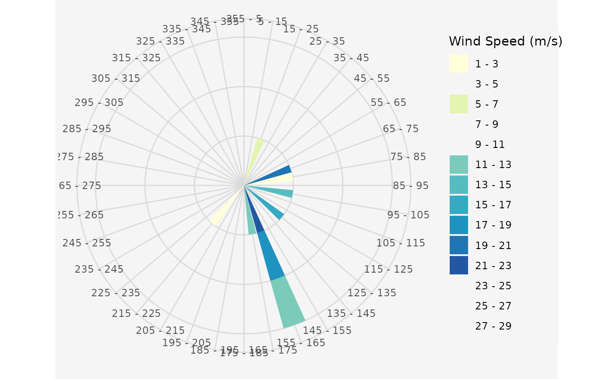
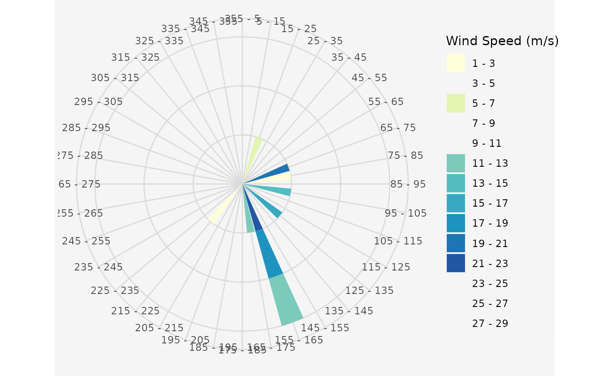

Plot a wind rose of the wind data frame.
Usage
plot_windrose(
data,
spd,
dir,
spdres = 2,
dirres = 10,
spdmin = 1,
spdmax = 30,
palette = "YlGnBu",
spdseq = NULL,
plotit = TRUE
)Arguments
- data
A data.frame containing the wind information
- spd
The column of the wind speeds in "data"
- dir
The column of the wind directions in "data"
- spdres
The increment of the wind speed legend. Default is 2
- dirres
The size of the wind sectors. Default is 10
- spdmin
Minimum wind speed. Default is 1
- spdmax
Maximal wind speed. Default is 30
- palette
A color palette used for drawing the wind rose
- spdseq
A wind speed sequence, that is used for plotting
- plotit
Should the windrose be plotted? Default is TRUE
See also
Other Plotting Functions:
plot_cloud(),
plot_development(),
plot_evolution(),
plot_fitness_evolution(),
plot_parkfitness(),
plot_result(),
plot_windfarmGA(),
random_search_single()
Examples
## Exemplary Input Wind speed and direction data frame
# Uniform wind speed and single wind direction
data.in <- data.frame(ws = 12, wd = 0)
windrosePlot <- plot_windrose(
data = data.in, spd = data.in$ws,
dir = data.in$wd
)
 # Random wind speeds and random wind directions
data.in <- data.frame(
ws = sample(1:25, 10),
wd = sample(1:260, 10)
)
windrosePlot <- plot_windrose(
data = data.in, spd = data.in$ws,
dir = data.in$wd
)

# Random wind speeds and random wind directions
data.in <- data.frame(
ws = sample(1:25, 10),
wd = sample(1:260, 10)
)
windrosePlot <- plot_windrose(
data = data.in, spd = data.in$ws,
dir = data.in$wd
)
